えもちゃっとライブの入れ方・使い方
ライブ配信のチャット欄が、コメントの盛り上がりに合わせて光る Chrome 拡張機能「えもちゃっとライブ」の、入れ方と使い方です。無料で、会員登録なしで使えます。動画で見たい方は、YouTube の「入れ方と使い方」（2 分）をどうぞ。
スマホでご覧の方へ
えもちゃっとライブは、パソコンの Chrome に入れて使う拡張機能です。スマホやタブレットには入れられません。PC の Chrome で「えもちゃっとライブ」と検索すると、すぐに見つかります。
入れ方（1 分・4 手順）
用意するものは、パソコンの Google Chrome だけです。スマホのブラウザには入れられません。
手順 1: ストアのページを開く
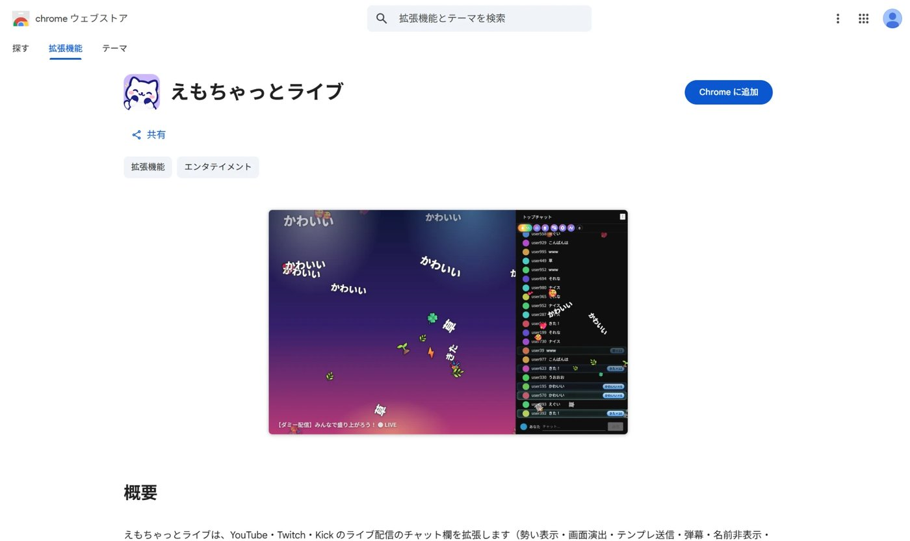
手順 2: 「Chrome に追加」を押す
確認の小さな窓が出るので、「拡張機能を追加」を押してください。
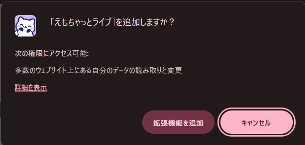
この窓には「多数のウェブサイト上にある自分のデータの読み取りと変更」と出ますが、えもちゃっとライブが働くのは YouTube・Twitch・Kick の配信を見ている時です。読み取ったコメントを、運営者のサーバーに送ることはありません（くわしくはプライバシーポリシー）。
右上に「Chrome に追加されました」と出れば、入れ終わりです。
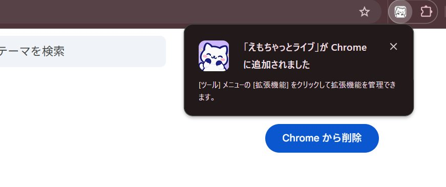
手順 3: ツールバーにピン留めする（おすすめ）
Chrome の右上にあるパズルのアイコンを押して、一覧の「えもちゃっとライブ」の横のピンを押します。設定ページを開く時にすぐ見つかります。
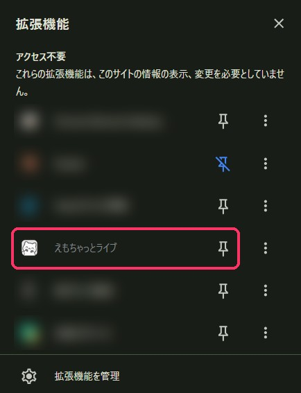
手順 4: ライブ配信を開く
YouTube・Twitch・Kick のライブ配信のページを開くと、チャット欄の上にえもちゃっとライブのツールバーが出ます。これが出ていれば入っています。コメントが増えてくると、チャット欄の縁が光り、盛り上がりに合わせて演出が出ます。
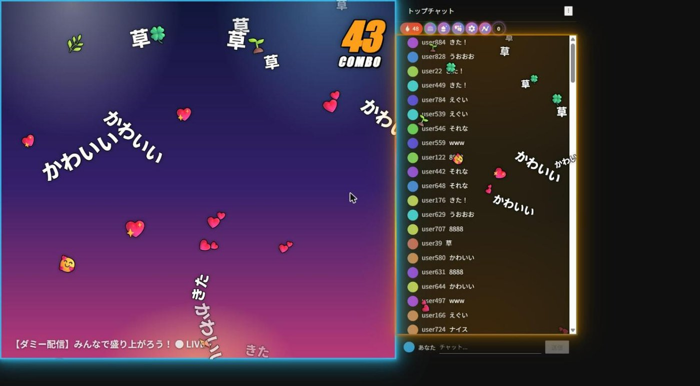
ツールバーの見方
配信を開くと、チャット欄の上にこのツールバーが出ます。左から順に説明します。
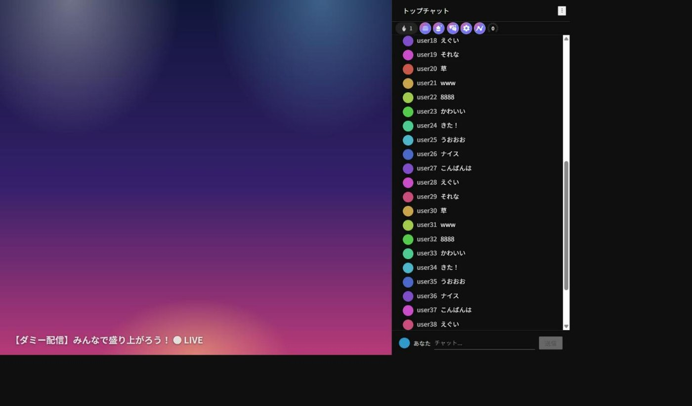
| ボタン | 何をする |
|---|---|
| 炎と数字 | 勢いメーター。直近 10 秒のコメント数です。押すと演出の感度を変えられます |
| 推しタウン | 同じ配信者を見ているファンどうしで作る街を開きます（ログインが必要） |
| テンプレ・スタンプ | 登録しておいたコメントや、ねこのキャラのスタンプを 1 回押すだけで送ります |
| 表示設定 | テーマ・文字の大きさ・演出のオン／オフなど、見た目の全部 |
| グラフ | コメントの速さのグラフ、名場面、実績、ランキング |
| プロフィール | 推しの数・合計の視聴時間・称号。ファンレベルが見られます |
鍵のマークが付いているボタンや項目は、準備中の機能です。
勢いメーターと演出
炎の横の数字が、直近 10 秒に流れたコメントの数です。この数が「ふだんの何倍か」で、チャット欄の演出が「通常 → 盛り上がり → 激熱」と変わります。ボタンを押すと「感度」のパネルが開きます。「オート」のままで大丈夫ですが、「もっと光ってほしい」時は、ここで変えられます。
同じ反応が続くと、オーラが出ます。「草」が続くと草のオーラ、「8888」が続くとコンボです。
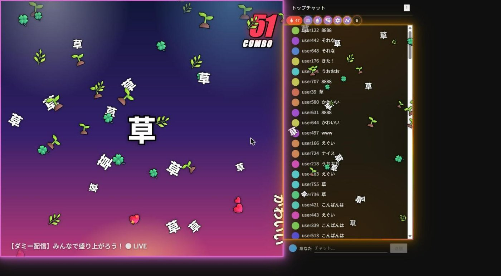
テンプレとスタンプ（ワンクリックで送る）
このボタンを押すと、上にテンプレ、下にスタンプの一覧が開きます。
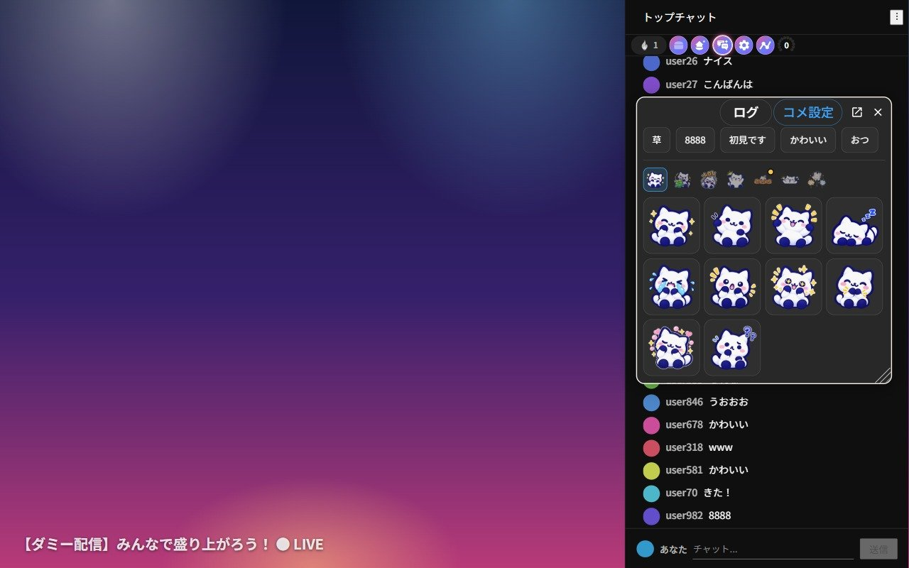
テンプレは、「88888」「初見です」のように、よく送るコメントを登録しておくと、ボタン 1 回で入力から送信までやってくれます。
- 7 個まで登録できます。右上の「コメ設定」から追加・書き換え・並べ替えができます。
- 「セット」を切り替えると、配信者ごとに違うテンプレを使い分けられます。
- 送った直後は、次に送れるまでのバーが出ます（連投を防ぐためです）。
- 「ログ」で、自分が送ったコメントの記録を見られます。
スタンプは、押したスタンプがそのままコメント欄に送られます。同じ拡張機能を入れている人の画面には絵で表示されます（入れていない人には、短い文字として見えます）。上の小さなねこの並びで分類を切り替えられ、期間限定のスタンプは「○月○日まで」と書いてあります。
コメントの入力欄が無い時（ログインしていない・アーカイブなど）は送れません。
表示設定
見た目に関することは全部ここです。上のタブで「コメント」「画面設定」「フィルター」「弾幕」「アクスタ」に分かれています。
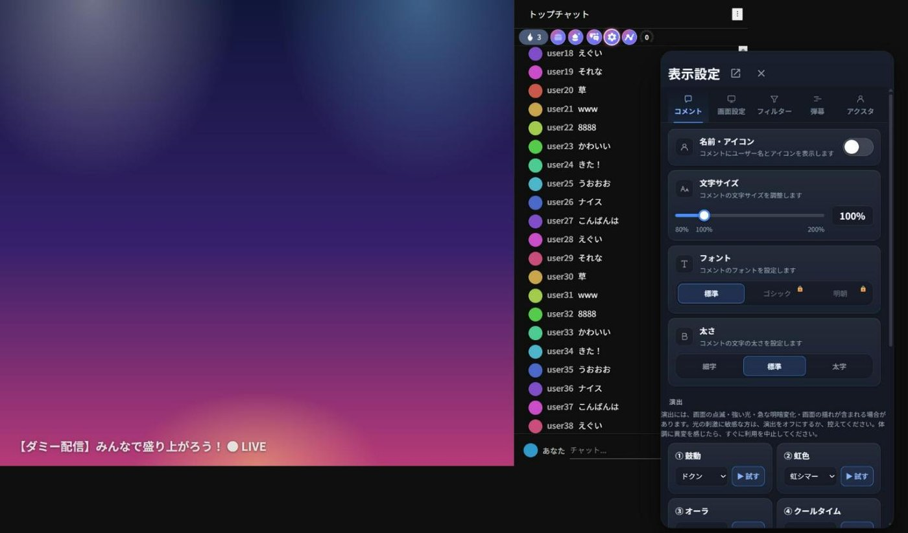
- コメント: 名前・アイコンを隠す（配信画面を人に見せる時に便利）、文字サイズ（80〜200%）と太さ、演出（鼓動・虹色・オーラ・クールタイム・紙吹雪・花火・縁の光・感情の雨・スパチャのきらめき）をひとつずつオン／オフ。「▶ 試す」で、その演出だけを今すぐ出して確かめられます。
- 画面設定: テーマ（ダーク・ライト・自動）、ページの背景画像とその暗さ、動画への演出（激熱の時に動画の上にも紙吹雪や花火を出すか）。
- フィルター: 絵文字だけ・スタンプだけのコメントを隠す、NG ワード（5 個まで）を含むコメントを隠す。自分の画面だけで、ほかの人には影響しません。
- 弾幕: コメントを動画の上に右から左へ流します。流す量や文字の大きさを選べます。
- アクスタ: ねこのキャラを画面の好きな場所に置けます。ドラッグで動かしたり大きさを変えたりできます。
グラフ（盛り上がりを振り返る）
グラフのボタンを押すと、配信中のコメントの速さが折れ線で出ます。どこで一番盛り上がったかが一目で分かります。
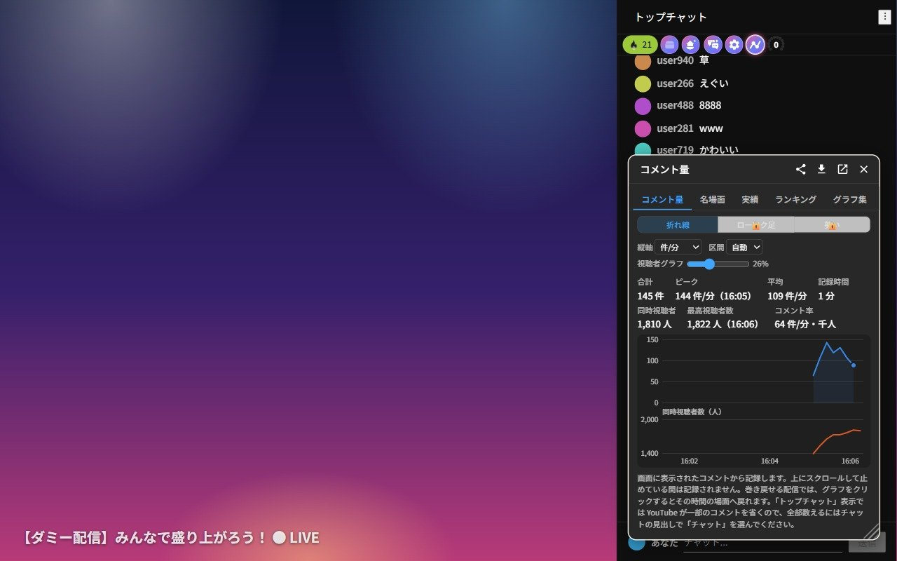
- 縦軸（件/秒・件/10 秒・件/分）と区間（10 秒〜30 分）を変えられます。
- 「名場面」には、コメントが多かった区間が一覧になります。
- 「実績」には、視聴時間やコメント数の記録。「グラフ集」には、曜日ごと・時間帯ごとの推し活がグラフで出ます。
- 「ランキング」は、Google でログインして「参加する」にした人だけが載ります。最初は「参加しない」です。
- CSV で保存することもできます。
アーカイブ（録画）を見ている時は、動画全体のコメント量がグラフになり、グラフの好きな場所を押すとそこから再生できます。
プロフィール（ファンレベル）
一番右のボタンがプロフィールです。推しの数、合計の視聴時間、取った称号が見られます。配信を見た時間やコメントの数で、配信者ごとにファンレベルが上がっていきます。称号は、視聴時間やコメント数などの節目で増えていき、「一覧」を押すと全部の段と取る条件が見られます。
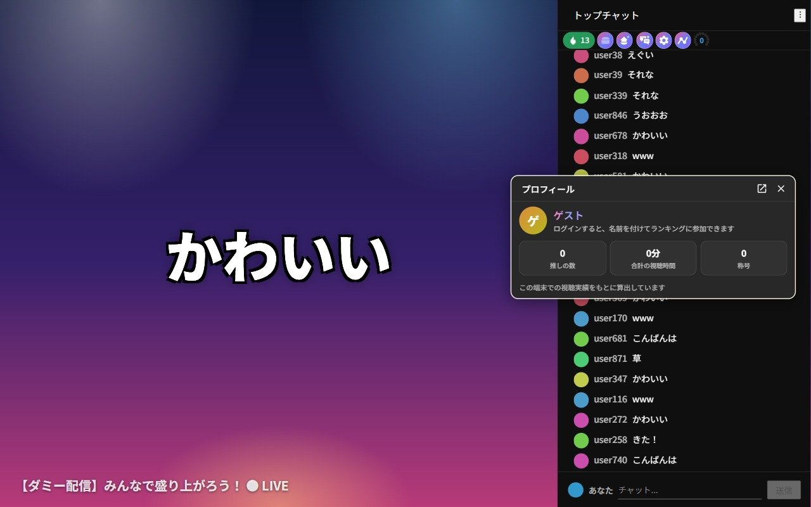
ログインしなければ、これらの記録はお使いの Chrome の中だけに保存されます。
設定とログインについて
ログインしなくても、ほとんどの機能が使えます。ランキングに参加したり、別のパソコンに記録を引き継いだりしたい時だけ、設定ページから Google でログインします。設定ページは、ピン留めしたアイコンを押して「オプション」を選ぶか、ツールバーの「プロフィール」から開けます。
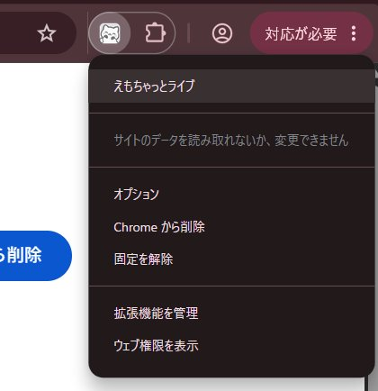
何を保存するかは、プライバシーポリシーに全部書いてあります。
こんな時は
- 演出がうるさい: 表示設定の「コメント」で、演出をひとつずつオフにできます。「縁の光」だけ残すのがおすすめです。
- 人に画面を見せる: 表示設定の「名前・アイコン」をオフにすると、コメントの名前が隠れます。
- 特定の人のコメントを見たくない: コメントの上にカーソルを乗せると出るメニューから、その人をブロックできます（自分の画面だけです）。
- ツールバーが出ない: ページを読み込み直してください（F5）。それでも出ない時は、Chrome を再起動してください。
- アーカイブ（録画）を見ている: アーカイブのチャット再生でも動きますが、一部の演出はライブだけです。
- チャット欄を別の窓で開いている: その窓にもツールバーが出ます。
「こうだったら嬉しい」「ここが動かない」などは、お問い合わせから教えてください。